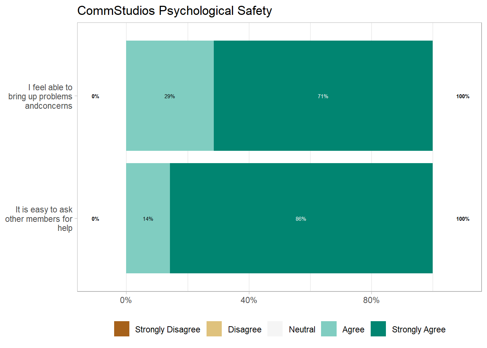
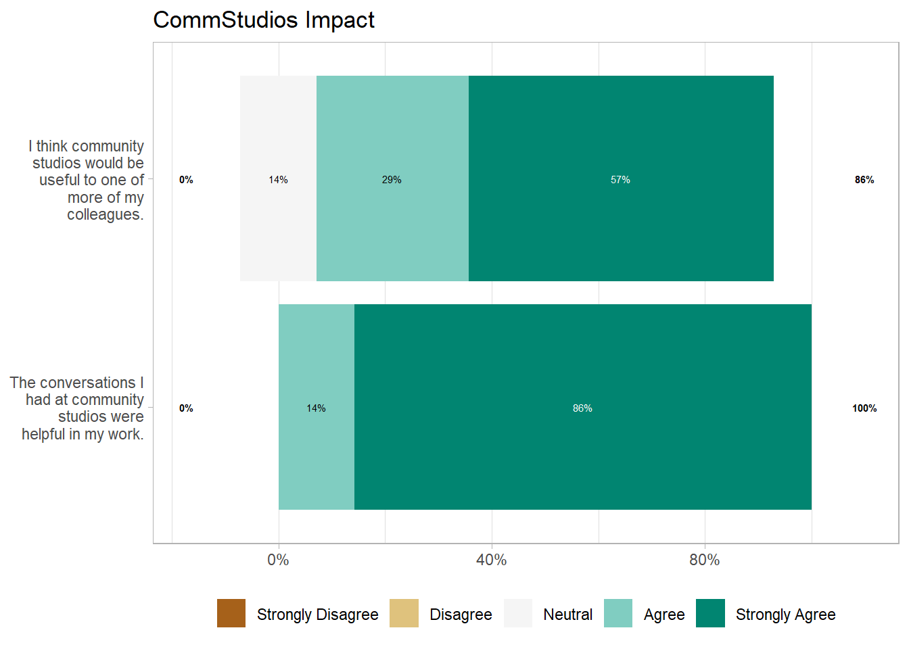
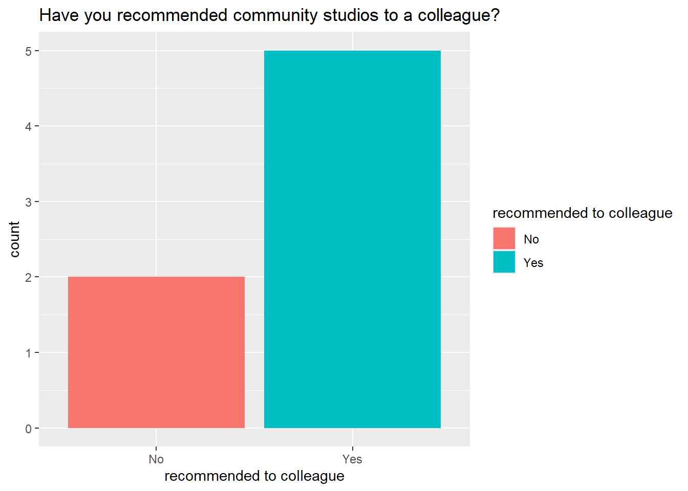

Research Informatics Community Studios Impact Report
Season 1 (April to June 2024)
DaSL Community Studios are events designed to catalyze community and conversations around shared workflows and interests in biomedical data science topics.
In Community Studios we hold closely the belief that we are all on the same team. Even though you may be the only computing or data science practitioner in your working group, we are committed to creating an environment where all feel welcome to share their experiences. This way, despite the challenges we face in our work, we can all learn from each other and improve our skills.

Community Studios Format
Community Studios is a bi-weekly meetup that covers a particular topic of interest. They differ from courses in that they focus on the application of computational knowledge in real-world settings by real-world people at Fred Hutch and beyond.
Formats for community studios include discussion of topics, show and tell presentations, short format topics, and workshops.
We use Community Notes to capture discussions, questions, and share resources about topics.
Topics Covered
The following is a list of topics discussed during the first season of RI Community Studios. Links to the Session notes are provided.
| Date | Community Notes | Topics Discussed |
|---|---|---|
| March 28, 2024 | Session Notes | Intro topics |
| April 4, 2024 | Session Notes | PROOF / Intro to WILDS (Taylor Firman) |
| April 18, 2024 | Session Notes | Streamlit (Sam Minot) / 15 Tips for Success with HPC |
| May 2, 2024 | Session Notes | Nextflow for Model Building (Diya Sashidhar) / Software Environments for Research Computing |
| May 16, 2024 | Session Notes | Research Data Management |
| May 30, 2024 | Session Notes | Nextflow for Isoform ID of PacBio Reads (Logan Wallace) |
Psychological Safety
Almost all research informaticians and computational biologists have impostor syndrome. That’s why having a forum where it’s safe to ask questions is important.
An atmosphere of psychological safety is the foundation of all Community Studios activities. We have Participation Guidelines to make CommStudios welcoming and inclusive to all. This includes outlining both desired behaviors (be collaborative; be respectful) as well as behavior that is not tolerated (personal attacks, derogatory language).
Overall, RI CommStudios rated quite high in psychological safety, with the majority of members strongly agreeing with the two psychological safety measures: being a place where they feel comfortable to raise problems and concerns, and ease of approaching other community studios members for help.
Impact


Recommendations for Future Community Studios
There is a desire for more interactive activities, such as workshops, by participants.
| The following questions are optional. What would you like to see community studios offer in the future? (Examples include workshops, short talks, co-working sessions, or specific topics.) |
|---|
| All of the above and perhaps some code review. |
| A genomics community studio |
| Workshops would be great but I also like listening to people's talks/code-reviews and things where I can learn about others' research. |
| Workshops |
| Ability to RSVP to all meetings at one time. |
| more short demos |
Barriers
Scheduling was the main barrier for those who could not attend.
| If you didn't attend community studios, what was the barrier to attending? |
|---|
| Once had conflicting meeting. |
| Conflicting meetings usually |
Anything Else
| Is there anything else you'd like to tell us? |
|---|
| I would very much like to see community studios continue and believe it has real tangible value. |
| It would be great to have more subject specific studios! |
| Thanks for putting these together! |
| I really appreciated the enthusiasm and friendliness of everyone in this workshop |
Changes to Implement for Season 2
Given the feedback, we will want to implement the following recommendations for Season 2.
- Change branding to Learning Community. - external feedback (not shown) from other community organizers suggests that Community Studios is less inclusive than learning community - we will shift the branding over.
- Make Zoom Meeting a single recurring invite.
- More short form content.
- Workshops (for example, working with containers).
- Have subject specific Community Studios. Genomics seems to be a popular topic, so we will explore bringing applications of this topic and others.